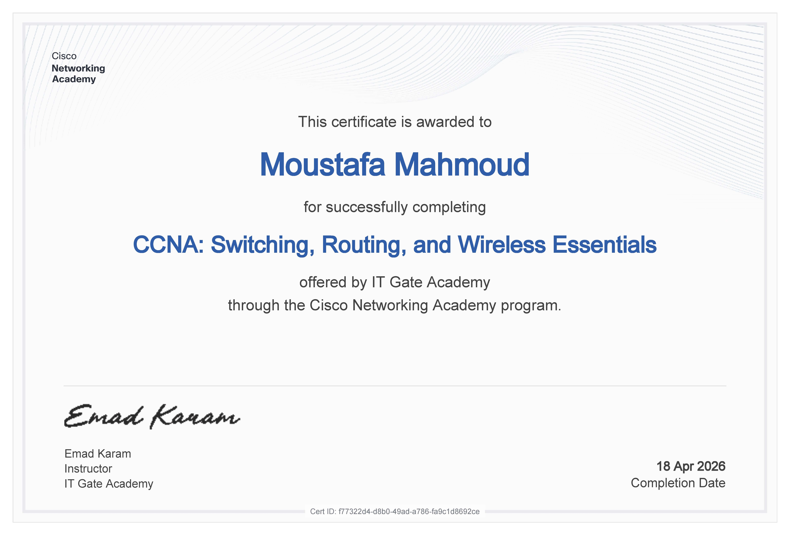
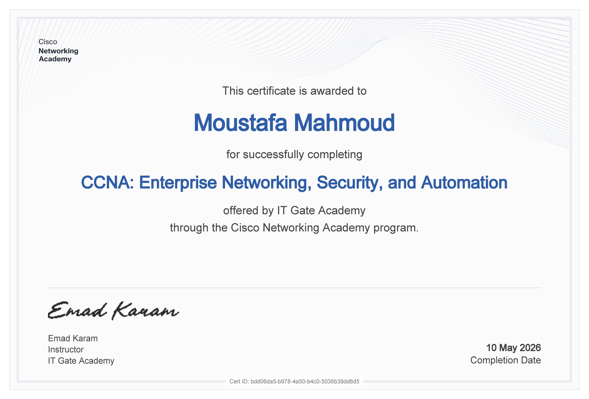

IT Infrastructure Engineer | System Administrator | Cybersecurity Enthusiast
Windows Server • Microsoft 365 • Active Directory • CCNA • MCSA
Years Experience
Supported Users
Client Environments

Core switching, routing and wireless networking concepts.

Enterprise networking, security and automation technologies.
Email: moustafa.qottp@gmail.com
Phone: 01000220011
Location: Cairo, Egypt
LinkedIn: linkedin.com/in/moustafa-qottp
GitHub: github.com/moustafaqottp